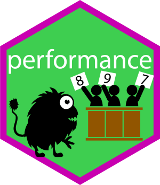

Test a cluster count against matched-null data
Source:R/test_clusters.R
test_clusters.Rdtest_clusters() runs a cluster-count selector on the observed data and on
iterations matched-null twins of those data, and compares the observed
count with the counts the twins produce. The twins keep the observed values
of every variable exactly and reproduce the observed correlations
approximately, but contain no cluster structure by construction. The test
reports one of three outcomes: no detected excess, a departure from the
reference model, or a count below the reference range. The comparison is
implemented with matchednull::matched_null_test(). It asks a different
question from check_clusterstructure(), which evaluates clustering
tendency against a spatial-uniformity null.
Usage
test_clusters(
x,
cluster_function = NULL,
iterations = 200,
n_max = 10,
standardize = TRUE,
...
)Arguments
- x
A numeric matrix or data frame with at least two columns, no constant columns, and no missing or infinite values.
- cluster_function
A function that takes a numeric matrix and returns a single finite number, typically the selected number of clusters. By default,
mclust::Mclust()selects the number of mixture components by BIC. The function is called once on the observed data and once on every twin, and its return value is checked each time (see 'Details').- iterations
Number of matched-null twins to evaluate.
- n_max
Maximum number of clusters considered by the default
mclust::Mclust()pipeline. Ignored whencluster_functionis supplied.- standardize
Logical. If
TRUE, variables are standardized before the observed and matched-null cluster counts are computed.- ...
Additional arguments passed to
matchednull::matched_null_test(), such ascopula,df,probs,ridge, orparallel.
Value
An object of class "test_clusters" and "matched_null_test": a
list with the observed statistic (real), the twin statistics (null),
the reference interval (interval), the Monte Carlo exceedance
probability (p_exceed), the interval verdict (within), the number of
twins (R), and the copula family (copula, with df for the t copula).
The attribute "outcome" is "within", "above", or "below": the
position of the observed statistic relative to the reference interval.
The attributes "standardize" and "n_max" record the preprocessing and
the maximum number of components of the default pipeline (n_max is
NULL when cluster_function is supplied).
Details
The default cluster-count pipeline fits Gaussian mixture models with one to
n_max components using mclust::Mclust() and returns the BIC-selected
number of components. A user-supplied cluster_function receives the same
preprocessed data matrix as the default pipeline. Its return value is
checked on the observed data and on every twin: it must be a single finite
number, and any other value (NA, a character string, a factor, a logical
value, a vector of length two, NULL) is an error. The check runs here, on
the raw return value, so that the error names cluster_function and what it
returned.
Reference model
Each twin is drawn from a Gaussian copula whose latent correlation matrix
is the observed correlation matrix. Every column of a twin contains exactly
the observed values of that variable, rearranged in the rank order of the
copula draw. The margins are therefore reproduced exactly, but the
correlations only approximately: non-normal margins change the Pearson
correlations of the output relative to the latent correlation matrix. With
copula = "t", the draw comes from a t copula instead, a sensitivity
variant with heavier-tailed dependence. Rerunning with copula = "t" shows
whether the outcome changes under that reference model; it does not by
itself establish or rule out clusters.
Outcomes
The observed count is compared with the interval between the probs
quantiles of the twin counts (by default the 2.5% and 97.5% quantiles).
A count above the interval is a departure from the specified reference model. The test does not settle what kind of departure it is, and the result is not evidence that clusters exist: typeless data with joint asymmetry, for example, can exceed the reference model as well.
A count inside the interval is no detected excess for the statistic that was compared, the cluster count. It is not evidence that there are no clusters, and it does not establish that the joint distribution belongs to the reference family.
A count below the interval is a diagnostic signal, not a verdict. It calls for checking the pipeline and the reference before any interpretation: whether the fits converged, whether the twins reproduce the intended margins and correlations, and whether data and twins were compared at the same sample size with the same statistic.
p_exceed is a Monte Carlo exceedance probability under a reference model
fitted to the same data. It equals (1 + k) / (iterations + 1), where k
is the number of twins whose count is at least the observed count. It is
not an exact finite-sample p-value.
Before running the test
Inspect the margins for pronounced multimodality first, for example with
check_multimodal() on single variables. Groups that differ only in
their means are detected at moderate separations. At large separations the
separation shows in the margins themselves. The twins keep the margins
exactly, so the pipeline can select as many clusters in the twins (which
contain no groups) as in the data, and the comparison may then report no
detected excess. This behaviour was observed in the simulation
constructions of Meng (2026); it is not asserted as a general rule. Whether
the joint distribution has clustering tendency is a different question
again; see check_clusterstructure(), which uses a spatial-uniformity
null.
References
Meng, M. (2026). matchednull: Matched-null tests for cluster-count claims. R package version 0.2.2. https://CRAN.R-project.org/package=matchednull
Meng, M. (2026). Types Without Taxa: A Covariance-Matched-Null Multiverse Test of Categorical Versus Continuous Personality Structure. Preregistration, Open Science Framework. doi:10.17605/OSF.IO/2EKCG
Examples
# \donttest{
set.seed(42)
test_clusters(iris[, 1:4], iterations = 19, n_max = 4)
#> # Matched-null test of the cluster count
#>
#> Observed statistic: 2
#> Reference interval: [2, 4] (2.5% and 97.5% quantiles of the twins)
#> MC exceedance (twins >= observed): 1.000
#> Reference model: Gaussian copula, 19 matched-null twins
#>
#> No detected excess: the count lies within the reference interval.
#>
# Any pipeline that returns one number can be tested, for example k-means
# with the number of clusters chosen by the mean silhouette width.
select_k <- function(data) {
ks <- 2:5
sil <- vapply(ks, function(k) {
cl <- stats::kmeans(data, centers = k, nstart = 5)$cluster
mean(cluster::silhouette(cl, stats::dist(data))[, "sil_width"])
}, numeric(1))
ks[which.max(sil)]
}
test_clusters(iris[, 1:4], cluster_function = select_k, iterations = 19)
#> # Matched-null test of the cluster count
#>
#> Observed statistic: 2
#> Reference interval: [2, 2] (2.5% and 97.5% quantiles of the twins)
#> MC exceedance (twins >= observed): 1.000
#> Reference model: Gaussian copula, 19 matched-null twins
#>
#> No detected excess: the count lies within the reference interval.
#>
# }